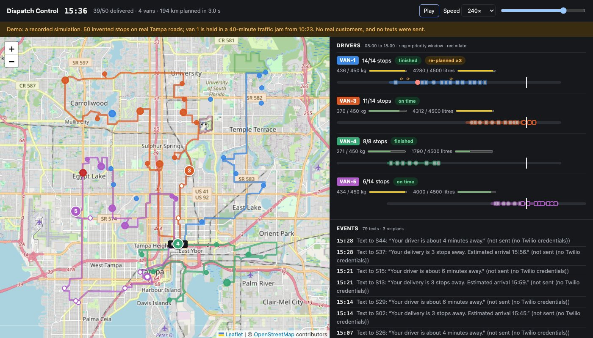

Python · Operations research · 2026-10
Can 50 Deliveries Be Re-Planned While Driving?
A routing engine that plans 50 stops for a van fleet on real Tampa roads in 3 seconds (time windows, weight and volume limits, shifts), then follows the vans live: 15 minutes behind triggers a re-plan pushed to the driver, and customers are texted at 3 stops and 10 minutes away.
The 50 stops are invented (random points over Tampa); the roads and travel times are real (OpenStreetMap via the public OSRM server). The live day is a simulation: scripted drivers, one of them held in a jam. There is no live traffic feed, and Twilio was never called for real: with no credentials the texts are recorded as “not sent”. The solver is a heuristic with a time limit; its plans are the best found, not proven optimal.
01 — The problem
A dispatcher has 50 parcels, 5 vans and a day. Each van holds only so much, each driver works a shift, some customers were promised a two-hour window. Deciding who goes where in what order is the vehicle routing problem, and the number of possible plans is far beyond trying them all. Then the day starts and a van gets stuck. Can software produce a good plan in seconds, notice when reality drifts from it, and fix the rest of the route while the van is on the road?
Third of four product blueprints built as a minimum version.
02 — What I built
A Python service with a live map dashboard.
- Travel times: a 51 × 51 matrix of driving times from OSRM, cached per pair of places so repeated requests cost nothing.
- Solver: Google OR-Tools with time windows, two capacities (weight, volume), shifts and service times; a separate checker re-verifies every plan.
- Live gateway: drivers' phones send positions over WebSockets; dashboards receive every event.
- Re-planning: a van more than 15 minutes behind gets its remaining stops re-ordered from where it is now.
- Texts and history: Twilio messages at “3 stops away” and “10 minutes away”; planned and actual times per stop stored for fleet metrics.
03 — How it was built
- 01
Ask the road network once, remember the answer
The solver needs the driving time between every pair of places. One request to OSRM's table service returns all 2,601 pairs for the depot and 50 stops. Every pair is stored in SQLite under its coordinates rounded to about 11 metres, so tomorrow's plan for the same customers, or a van re-planning among stops already seen, asks for nothing. A re-plan from a new position requests only that one missing row. If the routing server is down the code falls back to straight-line estimates and labels them as such.
dur, dist, source = h.matrix.table(pts, pts) - 02
State the rules; let the solver search
OR-Tools is told the constraints, not the method: a time dimension (driving plus service time, arrival inside each window, back before the shift ends) and two load dimensions. The cost is seconds driven plus seconds each van is out, plus a fixed amount per van used. A stop can be left out only at a large penalty, ten times larger for a priority stop. An early version costed only driving, and produced a van that left at 8:00 and waited five hours at its first stop: counting waiting time fixed that.
routing.AddDisjunction([index], PRIORITY_DROP_PENALTY if stop.priority else DROP_PENALTY) - 03
Profile it, and find the slow part was Python
A profile of a one-second solve showed three million calls from the solver back into small Python functions to look up a travel time. Handing OR-Tools the whole matrix instead removed them. Same time limit, better plan: the one-second result went from 210.6 km to 196.2 km, and the three-second plan now equals the thirty-second one.
routing.SetArcCostEvaluatorOfAllVehicles(routing.RegisterTransitMatrix(durations)) - 04
Notice a late van and re-plan its remaining stops
Each position message updates the van's projected arrival at its next stop. More than 15 minutes behind plan, the dispatcher re-solves that van's remaining stops from its current position and time. Windows become soft here: every parcel on board must still be delivered, so the answer is the least-late order, never “no answer”. The new route is pushed to the driver's socket and to every dashboard, and the plan is rebased so the next trigger needs another 15 minutes. All of this takes the time from the driver's message, so tests run a whole day in seconds with no clock.
if van.delay_s > DELAY_TRIGGER_S: - 05
Tell the customer, show the dispatcher
When a customer becomes the third stop ahead, and again when the van is within 10 minutes, a text goes out once (even if a re-plan reshuffles the order). The dashboard draws each van's road path in its own colour with a moving marker, and a timeline per driver: shift, stops, load meters for weight and volume, an amber or red bar for minutes behind, and a mark at each re-plan.
ahead = van.next + STOPS_AWAY - 1 # the customer who is now exactly 3 stops away
04 — Results
Planning 50 stops. 5 vans available (450 kg, 4,500 litres each), 12 stops with a promised two-hour window. The solver uses 4 vans, drops nothing, and a separate checker finds no rule broken at any time limit.
| Time limit | Distance | Van-hours |
|---|---|---|
| 0.5 s | 196.2 km | 11.13 |
| 1 s | 196.2 km | 11.13 |
| 3 s (default) | 193.5 km | 11.08 |
| 30 s | 193.5 km | 11.08 |
Thirty seconds of search finds nothing better than three. That is not a proof that 193.5 km is the best possible.
A simulated day with a traffic jam. Van 1 is held still for 40 minutes from 10:23.
| Measure | Value |
|---|---|
| Stops delivered | 50 of 50 |
| On time | 49 of 50 |
| Re-plans of van 1 | 3 |
| Customer texts generated | 93 |
| Calls to the routing server | 9 |
The second re-plan changed the stop order to bring a priority stop forward. It was still reached 8 minutes after its window closed, because the jam outlasted the re-plan: re-planning reduces lateness, it cannot always remove it. The same scenario run over real WebSockets against the running server gave the same outcome.

Checks. 20 automated tests (solver constraints, cache behaviour, the re-plan rules message by message, the sockets, and a full simulated day) cover 97% of the code and pass inside the Docker image.
05 — What I'd do next
- A traffic-aware travel-time source and a self-hosted routing server instead of the public demo one.
- Move stops between vans when one falls badly behind (only possible before loading, or with a hand-over point).
- Keep live state in a database so a restart does not lose the day; real Twilio delivery with opt-out handling.